Model
Concept: a representation of an idea, an object
or even a process or a system that is used to describe and
explain phenomena that cannot be experienced directly.
Models are central to what scientists do, both in their research
as well as when communicating their explanations.
Example:
- a diagram of our solar system
System Dynamics
Systems
- More than one part
- different parts interact and affect the others
- when one of its parts is affected or removed, all the other parts may be affected
- Part could not be in isolation
Local and Global Optimization
- Parts vs the System
- Sacrifices
- Unintended Consequences
Feedback Dynamics
Feedback dynamics through time is a key feature of systems’ behavior.
Assumptions -> Model -> Updated Model -> Result over time
BoT (Behavior over Time) Patterns
The diagram that outlines the relationships among variables is a “model” (representing reality).
The graphs projected from the model are generally called Behavior over Time (BoT) graphs.
BoT graphs can also represent historical patterns and trends
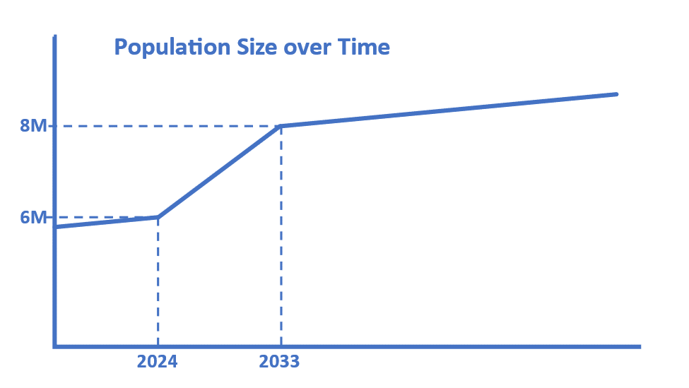
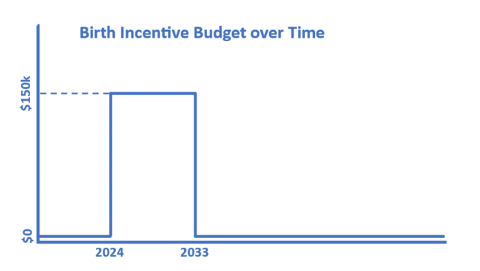
BoT Patterns Types:
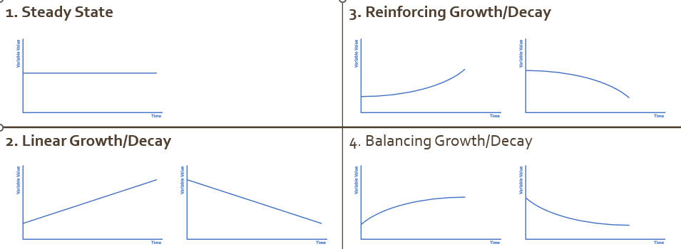
- Steady State
- Linear Growth/Decay
- Reinforcing Growth/Decay
- Balancing Growth/Decay
Problem Solving Approaches
band-aid quick fix
address problem symptoms - pros - easy to apply - results in quick effects - cons - not usually sustainable (unintended consequences) - locally optimised
fundamental solution
address the root cause of the problem symptoms
- pros
- potentially more sustainable
- usually optimised globally
- cons
- difficult to apply
- results take time to realise
Systems Methodology
Find a suitable solution:
1. Symptoms & Patterns
Contemplate the problem symptom and the related patterns (BoT
graphs).
Potential Causes
Identify potential causes of the symptoms at multiple levels. Such causes can be our variables in the model for the next part.The Model
Construct a systemic model with comprehensive feedback relationships to represent the system related to the problem symptom.The Solutions
Identify potential solutions (from band-aid quick fixes to more fundamental solutions). Evaluate their impact, effectiveness and sustainability by using the model from part 3. Recommend suitable solution(s) accordingly.
Symptom & Patterns
What is the problem symptom that we are facing at the moment?
e.g. Production output is low. We need to increase it in a sustainable way.Describe, in a BoT graph of the value of the key variable, the pattern of the problem so far, and how we want it to behave once the problem is addressed.
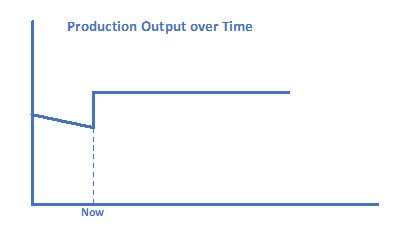
Potential Causes
Explore and identify potential causes (band-aid quick fixes and
fundamental solutions) of the problem defined.
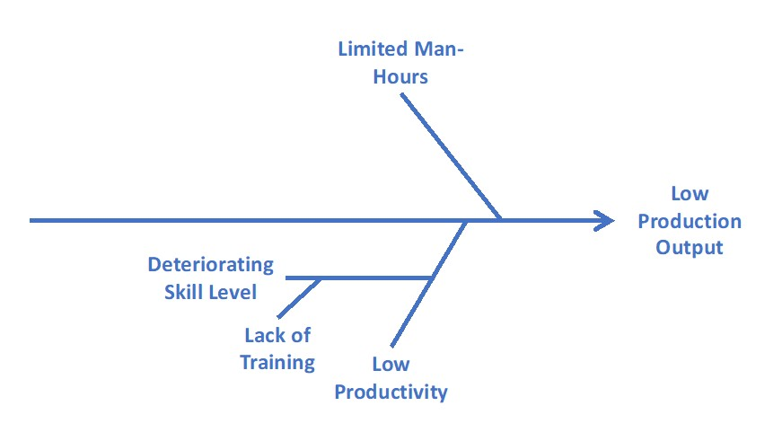
- Use Fishbone (Ishikawa) analysis
- list potential variables with neutral names
- Production Output
- Man-hours
- Productivity
- Skills
- Training
- Skill Deterioration
- Production Output
The Model
Using a selection (if not all) of the potential causes identified in
Part 2, develop a causal loop diagram model(CLD) that describes any
linear and feedback relationships among them. - start with a variable
for problem symptom
- then add one variable affects
- explain the dynamics
- Repeat Step 2 to 3
The Solutions
Find potential solutions for problem symptom.
- worse before better
- better before worse
CLD
Convention
- Neutral Variable Names
- Curved Arrows
- +/- for positive/negative relationships
- R/B Dynamic Labels for Reinforcing/Balancing Loop
- Even number of (–) → Reinforcing (R)
- Odd number of (–) → Balancing (B)
- Even number of (–) → Reinforcing (R)
Good Practices
- Exogenous variables
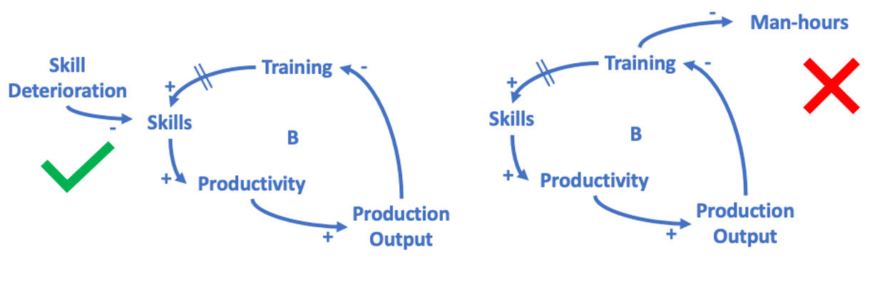
Incoming ones are fine. Outgoing ones should be avoided.
- Avoid crossing arrows
- check if your loops are really loops (arrows’ direction)
- Story Telling
Accompany with a short description. (cause CLDs are not usually self-explanatory)
Limitations
Sometimes the positive/negative (+/-) relationships may be valid only in one direction. Special interpretation may be required.
Principles of Systems Thinking
The Big Picture
- System vs Symptom
- Short and Long Term
- Time and Space
Soft Indicators
System as a Cause
Avoid Either/Or Thinking
Systems Archetypes
Causal Loop models that describe common phenomena.
If the scenario you are studying fits into these “template” archetype models, you may adapt them by renaming the variables and updating the arrow and loop dynamics to aid in problem solving and decision making.
Types:
Fixes that Fail
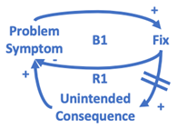
Limits to Growth
the polarity of the relationship between constraint and limiting action/factor could be changed to negative
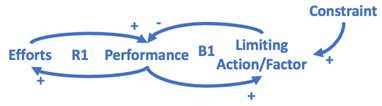
Escalation
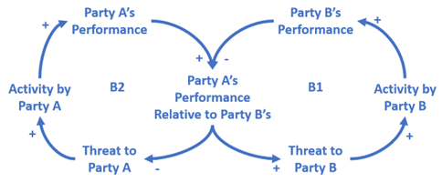
Shifting the Burden
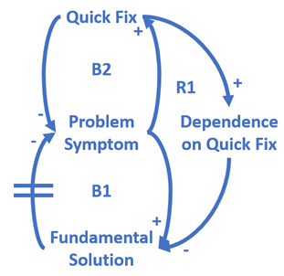
Drifting Goals
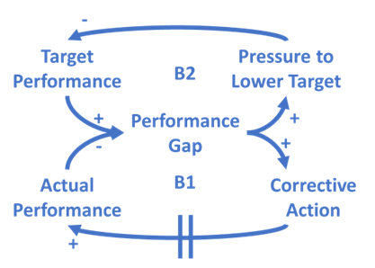